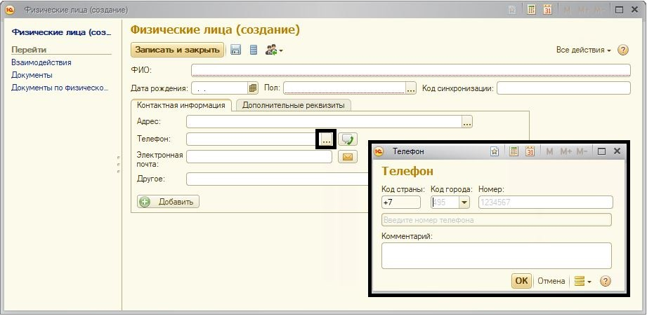

Для создания физического лица, необходимо зайти в раздел «Кадры», справочник «Физические лица», далее нажать кнопку «Создать», после чего появится окно, в котором необходимо ввести все данные по сотруднику и нажать кнопку «Записать и закрыть».
В карточке физического лица необходимо заполнить контактные данные:
-номер мобильного телефона- для возможности получения сотрудником СМС-оповещения
Для ввода номера телефона необходимо открыть форму телефонного номера через кн. в поле «Телефон»

Примечание:
*в случае некорректного ввода телефонного номера система сообщит об ошибках.
** для ввода добавочных/внутренних рабочих телефонов сотрудника рекомендуется использовать поле «Другое» в карточке физического лица
-адрес электронной почты-для возможности получения сотрудником E-mail оповещения
вводится в поле «Электронная почта» путем набора текста, без открытия дополнительной формы